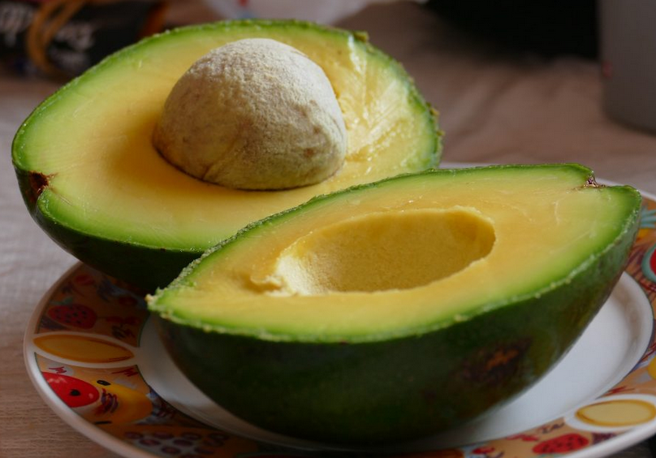
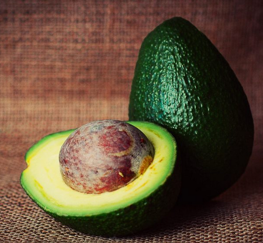

Alpukat merupakan jenis buah yang memiliki kandungan lemak tinggi, sekitar 20 kali lebih tinggi dibanding buah-buahan lain. Nama latin tanaman alpukat adalah Persea americana, diyakini berasal dari Amerika Tengah. Buah ini dikenalkan ke Indonesia oleh Hindia Belanda sekitar tahun 1920-1930.
Di Indonesia, tanaman alpukat masih merupakan tanaman pekarangan dan belum dibudidayakan dalam skala usahatani. Daerah penghasil alpukat adalah Jawa Barat, Jawa Timur, sebagian Sumatera, Sulawesi Selatan, dan Nusa Tenggara.

Jus alpukat termasuk salah satu minuman yang banyak digemari. Buah hijau satu ini dikenal lezat dan sehat. Alpukat mengandung berbagai jenis vitamin, asam folat, magnesium, hingga potassium.


PEMBAYARAN DI TEMPAT / COD
hanya untuk Jakarta, Bekasi dan Depok
POTONGAN ONGKIR Rp.5.000,-
UNTUK PEMBELIAN VIA TRANSFER
Memiliki anti aging yang bisa mendorong perawatan kulit alami
Membantu menurunkan tingkat stres, meringankan rasa sakit
Membantu mencegah terjadinya osteoporosis
Membantu treat diabetes, pendarahan menstruasi, insomnia
| No | Jenis Alpukat | Harga 1 Kg | Harga 2Kg | Harga 3Kg |
|---|---|---|---|---|
| 1 | Alpukat Mentega | Rp. 35.000, - | Rp. 65.000, - | Rp. 90.000, - |
| 2 | Alpukat Miki | Rp. 50.000, - | Rp. 90.000, - | Rp. 135.000, - |
| 3 | Alpukat Aligator | Rp. 30.000, - | Rp. 55.000, - | Rp. 80.000, - |
| 4 | Alpukat Kendil | Rp. 40.000, - | Rp. 75.000, - | Rp. 100.000, - |